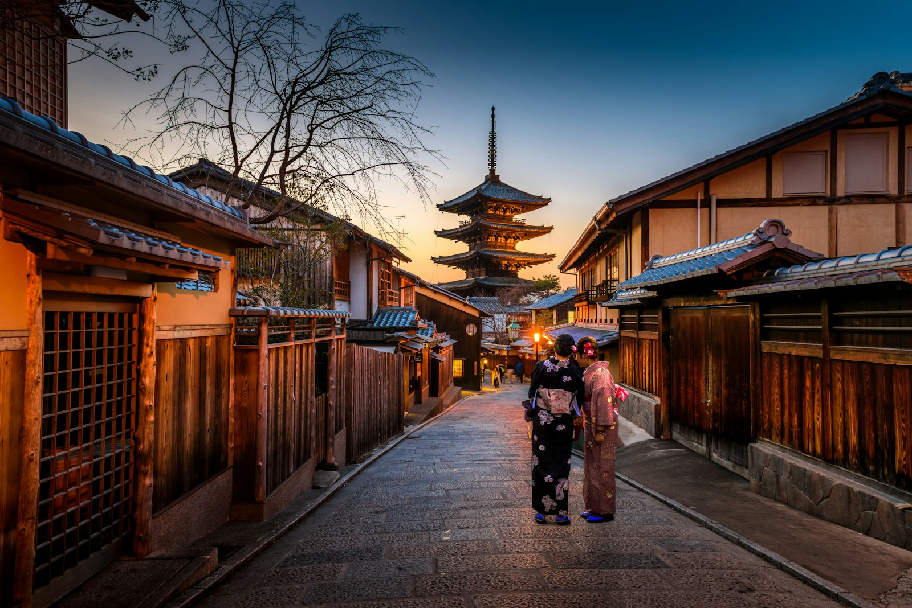
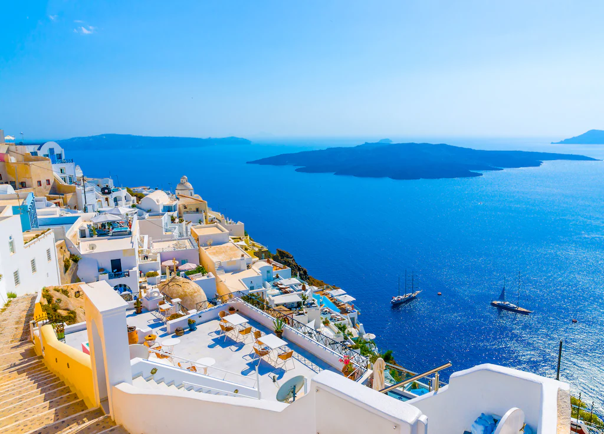
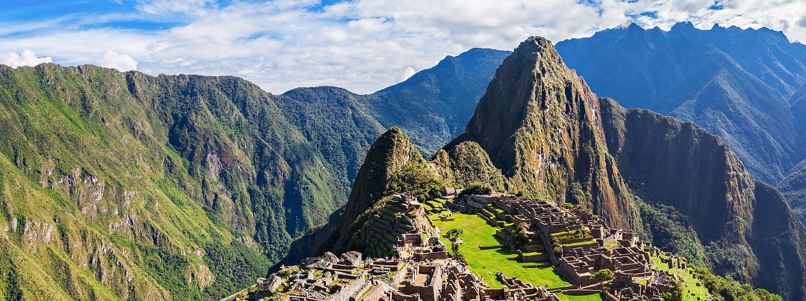

Destinos populares
Viajar es una de las experiencias más enriquecedoras que podemos vivir. Conocer nuevos lugares permite descubrir culturas diferentes, probar gastronomía típica y admirar paisajes increíbles. A continuación se presentan algunos destinos recomendados alrededor del mundo que destacan por su historia, belleza natural y experiencias únicas para los viajeros.
- Playas paradisíacas
- Montañas nevadas
- Ciudades históricas
| Destino | País | Tipo de viaje | Mejor época para viajar |
|---|---|---|---|
| Kyoto | Japón | Cultura y templos | Marzo - Mayo / Octubre - Noviembre |
| Santorini | Grecia | Islas y romance | Mayo - Septiembre |
| Cusco | Perú | Historia y aventura | Mayo - Septiembre |
| París | Francia | Cultura y gastronomía | Abril - Junio |
Sobre los destinos
Kyoto, Japón: Es una ciudad famosa por sus templos, jardines tradicionales y festivales culturales. Durante la primavera los cerezos en flor atraen a miles de turistas.

Santorini, Grecia: Esta isla es conocida por sus casas blancas con techos azules, sus impresionantes atardeceres y sus playas volcánicas. Es uno de los destinos más románticos del mundo.

Cusco, Perú: Antigua capital del Imperio Inca. Desde aquí se puede visitar Machu Picchu y otros sitios arqueológicos importantes de América del Sur.

París, Francia: La capital francesa es famosa por su arte, arquitectura, gastronomía y monumentos históricos. Es uno de los destinos culturales más visitados del mundo.
Consejos para viajar
- Investiga el clima del destino antes de viajar.
- Prueba la gastronomía local.
- Respeta la cultura y tradiciones del lugar.
- Lleva siempre tus documentos importantes.
- Explora lugares menos turísticos.
El mundo está lleno de destinos increíbles por descubrir. Planifica tu viaje con tiempo, elige el destino que más te inspire y disfruta cada experiencia que el viaje tiene para ofrecer.